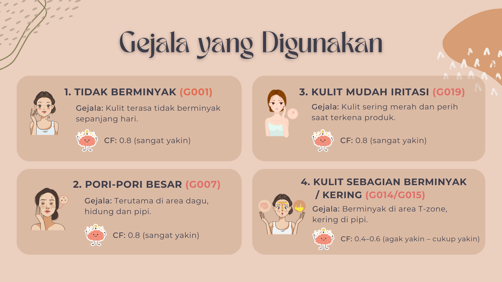
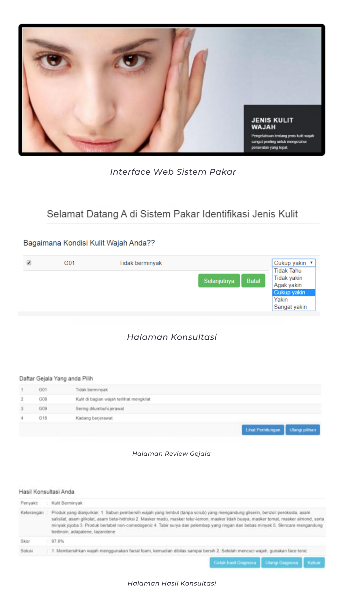

Review Jurnal
Sistem Pakar Identifikasi Jenis Kulit Wajah Dengan Metode Certainty Factor
Latar Belakang
Banyak orang melakukan perawatan wajah tanpa mengetahui jenis kulitnya, yang bisa menyebabkan masalah seperti jerawat atau iritasi. Sementara, akses ke dokter kulit terbatas oleh waktu, biaya, dan jarak. Untuk itu, dibutuhkan sistem yang dapat membantu mengidentifikasi jenis kulit secara cepat dan akurat.
Penelitian ini mengembangkan sistem pakar berbasis web menggunakan metode Certainty Factor sebagai solusi untuk menjawab permasalahan tersebut.
Tujuan Penelitian
- Mengembangkan sistem pakar untuk membantu identifikasi jenis kulit wajah.
- Meningkatkan efisiensi dan akurasi dalam proses diagnosis tanpa harus konsultasi langsung dengan dokter kulit.
- Memberikan rekomendasi solusi dan produk perawatan berdasarkan hasil diagnosa.
- Menggunakan pendekatan Certainty Factor untuk meniru cara berpikir seorang pakar.
Metode Penelitian
Peneliti menggunakan metode Certainty Factor untuk mengukur tingkat kepastian antara gejala dan diagnosis.
Prosesnya terdiri dari dua tahap:
- CF Parallel:
CFparalel = CFuser × CFpakar - CF Kombinasi:
CFkombinasi = CF1 + CF2 × (1 - CF1)
Tahapan Pengembangan Sistem
- Perumusan Masalah dan Studi Literatur
- Analisis dan Desain
- Pemrograman (Coding) dengan Metode Certainty Factor
- Pengujian Sistem dengan Blackbox Testing
Pada tahap awal penelitian, dilakukan identifikasi permasalahan, penetapan judul, perumusan tujuan, penelaahan literatur terkait, serta pengumpulan informasi yang diperlukan.
Analisis dan desain dilakukan dengan menjabarkan kebutuhan sistem pakar, membuat rancangan struktur data, merancang tampilan antarmuka pengguna, serta menyusun aturan alur penelusuran diagnosis.
Proses pemrograman meliputi penerjemahan rancangan sistem pakar ke dalam kode program, kemudian penerapan logika sistem berdasarkan metode Certainty Factor.
Pengujian bertujuan mengevaluasi fungsi sistem secara keseluruhan. Metode yang digunakan adalah blackbox testing, yaitu pengujian dengan cara mengamati output hasil eksekusi terhadap data uji tanpa melihat kode internal.
Implementasi Sistem
Sistem mengidentifikasi jenis kulit wajah (normal, berminyak, kering, kombinasi, sensitif) berdasarkan input gejala pengguna.

Gejala yang Digunakan
Proses identifikasi jenis kulit wajah dimulai dengan menentukan bobot pada masing-masing gejala sebagai indikator. Gejala-gejala tersebut ditentukan berdasarkan karakteristik kulit yang menggambarkan jenis kulit tertentu. Beberapa contohnya adalah sebagai berikut:
Antarmuka Sistem
Sistem terdiri dari halaman konsultasi, review gejala, dan hasil diagnosa yang ditampilkan dalam antarmuka berbasis web.
Pengujian Sistem
- Blackbox Testing:
Menunjukkan bahwa hasil dari penghitungan manual sama dengan hasil konsultasi sistem.
- Uji Responden:
- Jumlah Responden: 35 wanita
- Usia 15-50 tahun
- Melakukan perawatan dan didampingi dokter klinik kecantikan
- Akurasi Diagnosa Sistem:
- Akurasi penuh: 91%
- Ketidaksesuaian: 9%

Kelebihan Penelitian
- Meningkatkan efisiensi dalam mengetahui jenis kulit wajah.
- Meringankan beban layanan konsultasi dokter kulit.
- Rekomendasi produk memberikan nilai tambah praktis bagi pengguna.
- Dapat digunakan oleh klinik kecantikan maupun individu.
Keterbatasan Penelitian
- Keterbatasan Data Awal: Jika data kurang akurat, maka hasil identifikasi jenis kulit bisa kurang tepat.
- Tidak Mengakomodasi Faktor Lingkungan: Jenis kulit wajah bisa berubah akibat perubahan lingkungan.
- Belum Verifikasi Menyeluruh oleh Dokter: Tidak semua hasil sistem dikonfirmasi langsung oleh pakar kulit.
- Basis Data Produk Minim: Produk perawatan yang direkomendasikan belum dijelaskan secara detail.
- Minimnya Integrasi dengan Teknologi Lain: Sistem belum terhubung dengan teknologi seperti AI atau aplikasi mobile.
Kesimpulan
Sistem pakar ini memberikan solusi yang cukup baik dalam membantu pengguna mengidentifikasi jenis kulit wajah mereka dengan metode Certainty Factor. Dengan akurasi 91%, sistem ini dapat menjadi alat bantu bagi individu maupun klinik kecantikan. Namun ada beberapa kekurangan yang perlu diperbaiki, untuk pengembangan lebih lanjut.